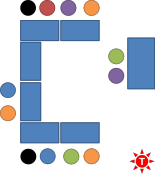

Monitoring

People are often told to monitor but rarely told how and when.
As we develop as teachers, we start to worry about this.
 |
Two sorts of monitoring |
Check monitoring and support monitoring are different. If you can come up with a definition, do that now and then click on the headings to show the answer.
- Check monitoring
- Once a task has been explained, an instruction given and the learners are starting on it, you need to be alert that they have understood your instruction, are doing what you wanted and getting on with it. This means going around the room to make sure and pausing where there's a problem so you can repair the instruction if necessary. That's check monitoring. If it isn't done effectively, people may be wasting their time and ruining the next stage of the lesson.
- Support monitoring
- Once a task is up and running, there may be a need for support
monitoring. If the learners can complete the task with no
input from you, it may be too easy or you may be setting the
task as a bit of revision. What we are talking about here is
the Zone of Proximal Development.
There is a guide on this site to scaffolding, the ZPD and Vygotsky, linked below, but some explanation follows.
 |
The Zone of Proximal Development |
Lev Vygotsky (1962) posited something known now as the Zone of Proximal Development
or the ZPD.
Briefly explained, it is the learning zone in which the
learner can achieve the task with a little help or scaffolding by
someone who knows more (you). It lies between tasks which the
learner can already do without help (so won't learn much) and tasks
which the learner cannot even attempt (so won't learn much). If
the task is too easy, the learner will get bored. If it's too hard
the learner will become anxious.
You can visualise it like this:

Part of the business of monitoring is to check that the task is in
the red zone. The other part is to supply just the level of help
and information that the learners need to complete the task but no more
or less.
If the task is too hard, you put the learner in the Anxiety zone (above
left on the diagram).
If the task is too easy, you put the learner in the Boredom zone (below
right on the diagram).
If you find yourself having to do the task for them or that your help is
never needed, the task is outside the red zone and less useful (or
even useless).
That's the theory.
Whether and how to monitor |
The first step in developing your monitoring skills is to decide what you should be doing. Clearly, at the outset of any task, you should do a bit of check monitoring but what next?
Decide what kind of task it is:
- Are you interested in the product?
Do the learners need to get the task right before you can go on?
Yes to both questions:- Is the task in the learners' ZPD?
- Yes: monitor carefully, sit with your students and scaffold their efforts by helping and leading. At the end, feedback from and to you should be thorough and searching.
- No? Then ask: Can you move the task to the ZPD by
asking for more or helping more?
- If you can, amend the task and start monitoring closely again
- If you can't, change your plan now, cut the task short and get on. Your planning was flawed.
- Is the task in the learners' ZPD?
- Is this task only one to raise awareness or get the learners
thinking about the topic?
Does it actually matter to the rest of the lesson what they come up with?
Yes to the first question, no to the second question:- This is a process task:
- You can wander around, pausing briefly to overhear what people are saying but you don't need to sit with the groups
- You need to take some notes so you can focus on what some people came up with. There's no need to get feedback from everyone.
- This is a process task:
Here's a kind of flow chart of this to keep on your desk in the lesson.

 |
Where am I and where should I be? |
More experienced teachers know intuitively and often unconsciously where they are needed in a classroom (face-to-face or online). However, it is worth pausing at stages in lessons where the learners are working on tasks to focus explicitly on the questions above.
Much will depend on the layout of the room or the facilities
available online (which are very much more limited, but that's
another matter).
The following is adapted from the guide to teacher's roles in the
initial plus section of this site (linked below).
| What role does the position of the teacher imply to you
in terms of monitoring? The teacher's positions are indicated by the symbol on the left. Click on the diagrams to see some comments. |
 |
In a small
enough room with a limited number of learners, you may
be able to monitor from one place without moving around
and distracting the learners. This is much more
difficult, nay impossible, to achieve satisfactorily
online.
This is also a good place to signal that you are a resource because anyone can ask you a question and you can make eye contact with all the learners. |
|  |
This is where you should be when you do not want a
role but you do want to be able to hear what everyone is
saying and see what they are doing.
It is unlikely that your presence will be ignored, of course, especially if you are standing so you can lower it by sitting down. From this position, however, you are unlikely to be able to hear and decide whether to intervene with the pairs in the top left of the diagram. This is a good place to be if you are confident that you are not needed, a bad place to be if you want to be an active monitor (of either sort). |
 |
In this classroom, learners are working in groups of
4 and your first position means that you are in the
role of facilitator or resource, monitoring and possibly providing a little help
to the group in the top right but probably being able to
hear the other two nearest groups.
If you watch the graphic, you'll see how this facilitator or monitoring role works as you move around. The faster you move, the less you will hear but the more you will be able to know what each group is doing quickly. Move quickly for check monitoring purposes, more slowly for support. |
 |
In this classroom, learners are working in pairs and
you are in check monitor mode. You have positioned
yourself where you can see and hear all the pairs and
are ready to intervene if they go off task or encounter
a difficulty that will block their progress.
It's the best of both worlds but unattainable in some classroom arrangements and impossible in purely online classrooms. |
A little test is to think about a lesson you have recently taught and ask yourself where you were in the room and whether it was the appropriate place to be.
Improving your monitoring |
Step 1: Plan what you will be doing
- Look at all the tasks in your lesson and apply the questions above. The sort of task will determine the monitoring you do (and, incidentally, how you will handle feedback).
- Make sure that any product task really is in the learners ZPD.
If you want to try a short test on identifying task types click here.
Step 2: React accordingly in the lesson
- Always check monitor.
- Do not interfere with process tasks but know what's going on.
- Always sit with learners and stay longer when they are involved with product tasks. Don't flit around.
You could explain to the learners what you are trying to achieve and get their feedback on whether they feel your monitoring seems more helpful and more relevant but be aware that some learners expect you always to be there to help, no matter how easy the task. They need to take more responsibility.
| Related guides: | |
| feedback | for more on feedback to and from learners |
| scaffolding | this guide includes considerations of the ZPD and Vygotsky's theories |
| grouping learners | for a simple guide to grouping learners for different task types |
| teacher roles | for a simple guide in the initial plus section of the site |
| types of task | for a consideration of how task types can be analysed |
| activity types | for a consideration of what activities are actually for |
Reference:
Vygotsky, L, 1962, Thought and Language, Cambridge, MA: MIT
Press